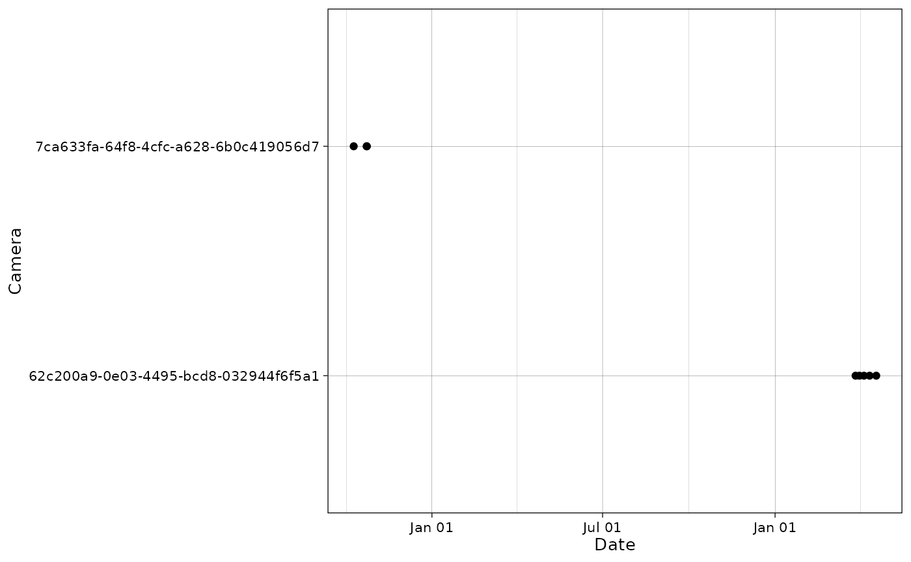
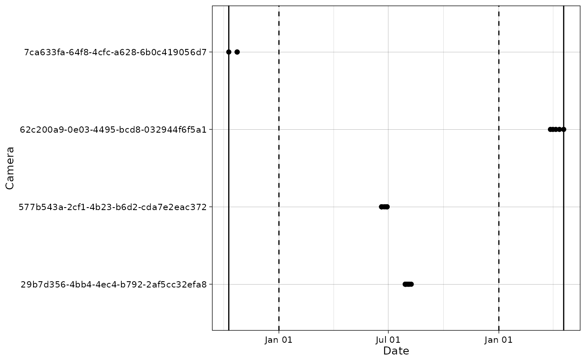

This vignette demonstrates how to filter camera trap data based on 4 criteria:
- cameras
- species
- observation type
- date
Import data
data(mica, package = "camtraptor")Here is the initial data:
p <- plot_points(mica$data$observations,
cam_col = "deploymentID",
datetime_col = "timestamp",
tooltip_info = "vernacularNames.en",
interactive = TRUE)
girafe(ggobj = p)Filter cameras
We can filter out cameras (NB: it is also possible to give a single camera in input).
Below are the cameras list for the original files:
# Original cameras in observations and
unique(mica$data$observations$deploymentID)
#> [1] "29b7d356-4bb4-4ec4-b792-2af5cc32efa8"
#> [2] "577b543a-2cf1-4b23-b6d2-cda7e2eac372"
#> [3] "62c200a9-0e03-4495-bcd8-032944f6f5a1"
#> [4] "7ca633fa-64f8-4cfc-a628-6b0c419056d7"
# Original cameras in deployments
unique(mica$data$deployments$deploymentID)
#> [1] "29b7d356-4bb4-4ec4-b792-2af5cc32efa8"
#> [2] "577b543a-2cf1-4b23-b6d2-cda7e2eac372"
#> [3] "62c200a9-0e03-4495-bcd8-032944f6f5a1"
#> [4] "7ca633fa-64f8-4cfc-a628-6b0c419056d7"
cam_filter <- filter_data(mica,
cam_col_rec = "deploymentID",
cam_filter = c("29b7d356-4bb4-4ec4-b792-2af5cc32efa8", "577b543a-2cf1-4b23-b6d2-cda7e2eac372"))The cameras have been filtered out from both observations and deployments tables:
unique(cam_filter$data$observations$deploymentID)
#> [1] "62c200a9-0e03-4495-bcd8-032944f6f5a1"
#> [2] "7ca633fa-64f8-4cfc-a628-6b0c419056d7"
unique(cam_filter$data$deployments$deploymentID)
#> [1] "62c200a9-0e03-4495-bcd8-032944f6f5a1"
#> [2] "7ca633fa-64f8-4cfc-a628-6b0c419056d7"
plot_points(cam_filter$data$observations,
cam_col = "deploymentID",
datetime_col = "timestamp")
Filter species
We can filter out by species (removing one or several species):
Below is the initial species list:
unique(mica$data$observations$vernacularNames.en)
#> [1] NA "gadwall" "mallard" "Eurasian beaver"
#> [5] "European polecat" "red fox" "beech marten" "grey heron"
#> [9] "great herons" "human"
spp_filter <- filter_data(mica,
spp_col = "vernacularNames.en",
spp_filter = "great herons")After data cleaning, great herons was removed.
unique(spp_filter$data$observations$vernacularNames.en)
#> [1] NA "gadwall" "mallard" "Eurasian beaver"
#> [5] "European polecat" "red fox" "beech marten" "grey heron"
#> [9] "human"Filter observation type
We can filter out by observation type. It can be useful for instance if we want to keep only animals (and not unidentifiable, humans…).
Below are the initial values of observation types:
obstype <- mica$data$observations$observationType
unique(obstype)
#> [1] unknown blank animal unclassified human
#> Levels: animal human vehicle blank unknown unclassifiedLet’s filter out all categories except animal:
# Define the types we want to remove
obs_out <- unique(obstype[obstype != "animal"])
obs_out
#> [1] unknown blank unclassified human
#> Levels: animal human vehicle blank unknown unclassified
obstype_filter <- filter_data(mica,
obstype_col = "observationType",
obstype_filter = obs_out)The only observation type remaining after data cleaning is
animal.
unique(obstype_filter$data$observations$observationType)
#> [1] animal
#> Levels: animal human vehicle blank unknown unclassifiedFilter dates
It is also possible to specify date bounds to the data.
Here is the original date range:
# Original date range
(old_range <- range(mica$data$observations$timestamp))
#> [1] "2019-10-09 13:18:07 UTC" "2021-04-18 21:24:42 UTC"Let’s filter a subset of the data between January, 1st 2020 and January, 1st 2021.
new_range <- c("2020-01-01", "2021-01-01")We visualize this filter on a plot: solid lines are the old data bounds and dashed lines represent the new date range.
plot_points(mica$data$observations,
cam_col = "deploymentID",
datetime_col = "timestamp") +
ggplot2::geom_vline(xintercept = as.POSIXct(new_range,
tz = "UTC"),
linetype = "dashed") +
ggplot2::geom_vline(xintercept = old_range)
Let’s filter the data.
date_filter <- filter_data(mica,
datetime_col = "timestamp",
daterange = new_range)The daterange argument can also be a Date
or POSIX:
(new_range_date <- as.Date(new_range))
#> [1] "2020-01-01" "2021-01-01"
date_filter <- filter_data(mica,
datetime_col = "timestamp",
daterange = new_range_date)
(new_range_posix <- as.POSIXct(new_range))
#> [1] "2020-01-01 UTC" "2021-01-01 UTC"
date_filter <- filter_data(mica,
datetime_col = "timestamp",
daterange = new_range_posix)The new data range is comprised within the specified bounds (January, 1st 2020 and January, 1st 2021).
# The new range is restricted
range(date_filter$data$observations$timestamp)
#> [1] "2020-06-19 21:00:00 UTC" "2020-08-08 04:20:35 UTC"It is also possible to filter data that has date and times i two columns. First, we create a dataset with these two columns:
mica_date_time <- mica
mica_date_time$data$observations <- mica_date_time$data$observations |>
dplyr::mutate(date = format(timestamp, "%F"),
time = format(timestamp, "%T"),
.after = "timestamp")
mica_date_time$data$observations |>
dplyr::select(timestamp, date, time) |>
head()
#> # A tibble: 6 × 3
#> timestamp date time
#> <dttm> <chr> <chr>
#> 1 2020-07-29 05:29:41 2020-07-29 05:29:41
#> 2 2020-07-29 05:38:55 2020-07-29 05:38:55
#> 3 2020-07-29 05:46:48 2020-07-29 05:46:48
#> 4 2020-07-30 04:29:31 2020-07-30 04:29:31
#> 5 2020-07-31 04:43:33 2020-07-31 04:43:33
#> 6 2020-08-02 05:00:14 2020-08-02 05:00:14And we filter dates on these data.
date_filter <- filter_data(mica_date_time,
date_col = "date",
time_col = "time",
daterange = new_range)The new data range is the same as above.
range(date_filter$data$observations$timestamp)
#> [1] "2020-06-19 21:00:00 UTC" "2020-08-08 04:20:35 UTC"Combine filters
Finally, it is possible to combine multiple conditions to customize data filtering:
custom_filter <- filter_data(mica,
cam_filter = "29b7d356-4bb4-4ec4-b792-2af5cc32efa8",
cam_col_rec = "deploymentID",
spp_filter = c("great herons", "grey heron"),
spp_col = "vernacularNames.en",
datetime_col = "timestamp",
daterange = c("2020-01-01", "2021-04-18"))Let’s check the filtering:
# Full dataset
unique(mica$data$observations$deploymentID)
#> [1] "29b7d356-4bb4-4ec4-b792-2af5cc32efa8"
#> [2] "577b543a-2cf1-4b23-b6d2-cda7e2eac372"
#> [3] "62c200a9-0e03-4495-bcd8-032944f6f5a1"
#> [4] "7ca633fa-64f8-4cfc-a628-6b0c419056d7"
# Filtered dataset
unique(custom_filter$data$observations$deploymentID)
#> [1] "577b543a-2cf1-4b23-b6d2-cda7e2eac372"
#> [2] "62c200a9-0e03-4495-bcd8-032944f6f5a1"
# Full dataset
unique(mica$data$observations$vernacularNames.en)
#> [1] NA "gadwall" "mallard" "Eurasian beaver"
#> [5] "European polecat" "red fox" "beech marten" "grey heron"
#> [9] "great herons" "human"
# Filtered dataset
unique(custom_filter$data$observations$vernacularNames.en)
#> [1] NA "Eurasian beaver" "European polecat" "red fox"
#> [5] "beech marten"
# Full dataset
range(mica$data$observations$timestamp)
#> [1] "2019-10-09 13:18:07 UTC" "2021-04-18 21:24:42 UTC"
# Filtered dataset
range(custom_filter$data$observations$timestamp)
#> [1] "2020-06-19 21:00:00 UTC" "2021-03-31 22:59:15 UTC"